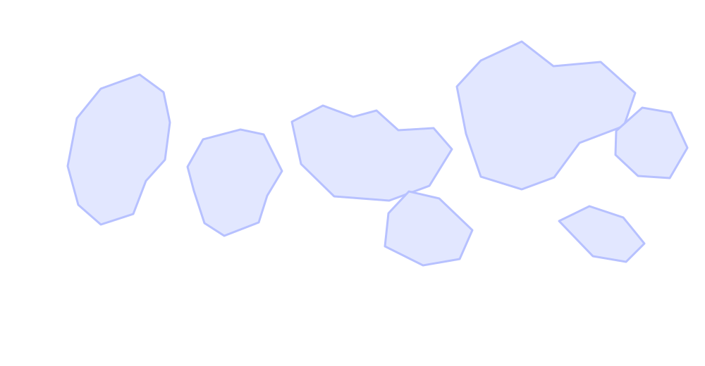

Projects
Things I've shipped or tinkered with recently.
About
My background is in cognitive science and computer science, so I'm drawn to where how people think meets how machines learn. These days that pulls me toward applied ML: building models that are explainable, useful, and actually deployed—not just accurate on a slide.
Through my OMSCS at Georgia Tech I'm learning ML and AI from the fundamentals up—I built a GPT from scratch in NumPy to understand the internals—and I care a lot about the production side: deployment, reliability, and how systems behave under real load.
Tech Stack:
- Languages: Python, Java, C++, SQL
- Frameworks: Spring Boot, Flask, React, Node.js
- Cloud & Infra: AWS, Docker, Kubernetes, CI/CD (Jenkins/Tekton), Autosys
- Data & ML: Elasticsearch, Pandas, NumPy, REST APIs, model serving & evaluation
- Observability & Quality: AppDynamics, Kibana, logging/metrics, SonarQube, Snyk, Swagger
Outside of engineering, I travel, read, try new food and coffee spots, shoot film, and hike with my dog. I love learning continuously and drawing ideas from psychology, systems thinking, and culture.
Travel
Places I've explored and photographed.
